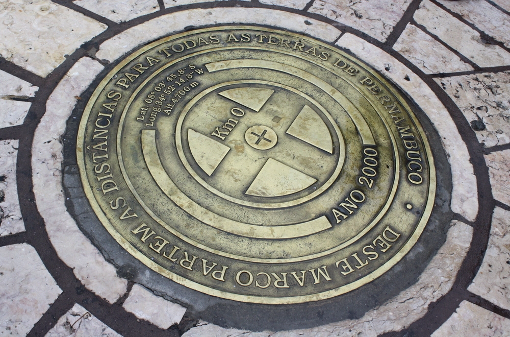

Marco Zero

O Marco Zero de Recife é um ponto emblemático e simbólico que marca o início da contagem das distâncias rodoviárias de Pernambuco. Localizado no bairro do Recife Antigo, próximo ao porto da cidade, este marco é mais do que apenas uma referência geográfica; é um símbolo da história, cultura e identidade da região.
O Marco Zero não apenas representa o ponto de partida das estradas que se estendem por todo o estado, mas também é um local de encontro e celebração para os moradores locais e visitantes. Rodeado por uma atmosfera vibrante, o espaço oferece uma vista deslumbrante do rio Capibaribe, além de ser cercado por edifícios históricos, restaurantes, bares e espaços culturais.
Além disso, o Marco Zero também é conhecido por sua escultura icônica: a Rosa dos Ventos, criada pelo artista plástico Abelardo da Hora. Esta obra de arte é uma representação visual das principais direções geográficas, adicionando ainda mais significado ao local.

Em suma, o Marco Zero de Recife é muito mais do que apenas um ponto de referência geográfica; é um símbolo de orgulho e identidade para os pernambucanos, além de ser um importante destino turístico que atrai pessoas de todo o mundo para explorar e vivenciar a rica história e cultura da região.